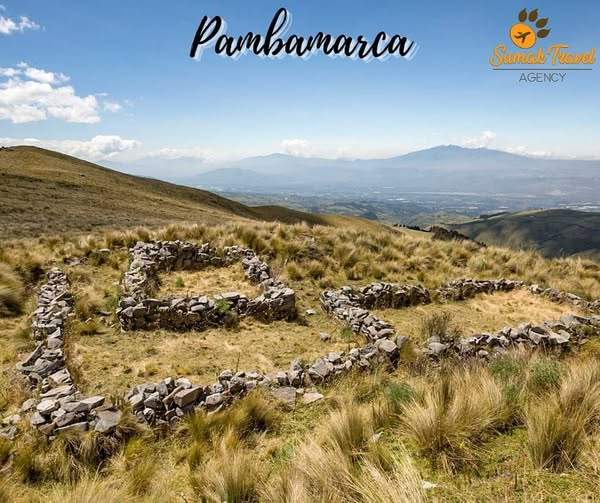
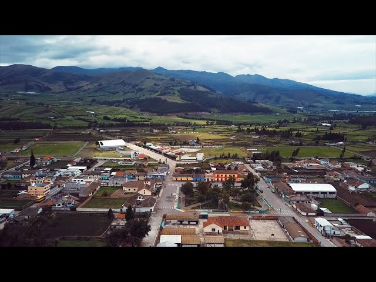

Zonas Turísticas de Cayambe

Parque Nacional Cayambe-Coca
El Parque Nacional Cayambe-Coca es una de las áreas naturales protegidas más importantes del Ecuador. Se caracteriza por sus paisajes de páramo, lagunas, ríos y una gran diversidad de flora y fauna. Es un lugar ideal para realizar caminatas, observar la naturaleza y disfrutar de impresionantes vistas del nevado Cayambe y de los ecosistemas andinos.

Cascadas del Cariacu
Las Cascadas del Cariacu son un atractivo natural rodeado de vegetación y paisajes montañosos. Sus aguas cristalinas forman un entorno tranquilo perfecto para el descanso y la fotografía. Este lugar es muy visitado por turistas que buscan contacto con la naturaleza y disfrutar de la belleza natural del cantón.

Centro Cultural Tránsito Amaguaña
El Centro Cultural dedicado a Tránsito Amaguaña honra la memoria de esta importante líder indígena ecuatoriana. En este lugar se realizan actividades culturales, exposiciones y eventos que promueven la historia y la identidad de los pueblos indígenas de la región. Es un espacio importante para conocer la lucha social y cultural del Ecuador.

Pambamarca
Pambamarca es una zona montañosa conocida por sus antiguas fortalezas preincaicas construidas por los pueblos indígenas. Este sitio arqueológico ofrece una combinación de historia y naturaleza, con paisajes andinos ideales para caminatas y exploración. Es un lugar importante para comprender la historia prehispánica de la región.

Museo Arqueológico de Cayambe
El Museo Arqueológico de Cayambe conserva piezas históricas y arqueológicas de las culturas que habitaron la región. En sus salas se pueden observar cerámicas, herramientas y objetos antiguos que muestran la forma de vida de los pueblos originarios. Este museo permite conocer mejor la historia y las tradiciones culturales del cantón.

Bizcochos de Cayambe
Los bizcochos de Cayambe son uno de los productos gastronómicos más representativos de la ciudad. Se preparan en hornos de leña siguiendo recetas tradicionales transmitidas por generaciones. Generalmente se sirven acompañados con queso de hoja o manjar, convirtiéndose en una experiencia culinaria muy popular entre turistas y visitantes.

Casa del Venado
La Casa del Venado es un espacio cultural donde se promueve el arte y la tradición local. En este lugar se pueden encontrar exposiciones de artesanías, pinturas y elementos representativos de la cultura cayambeña. Es un sitio que permite a los visitantes conocer más sobre la identidad cultural del cantón.

Hacienda Guachalá
La Hacienda Guachalá es considerada una de las haciendas más antiguas del Ecuador que aún se mantienen en funcionamiento. Su arquitectura colonial, sus jardines y su historia la convierten en un atractivo turístico muy importante. Los visitantes pueden conocer la vida tradicional de las antiguas haciendas andinas.

Iglesia Matriz de Cayambe
La Iglesia Matriz de Cayambe es uno de los edificios religiosos más representativos del cantón. Su arquitectura refleja la influencia colonial y su interior conserva elementos históricos y religiosos de gran valor. Es un lugar de encuentro para la comunidad y un punto importante para el turismo cultural.

Pesillo
Pesillo es una comunidad rural cercana a Cayambe que destaca por sus paisajes naturales y su importancia histórica en la organización indígena. Este lugar está rodeado de montañas y campos agrícolas que muestran la vida tradicional de la región. También es conocido por su valor cultural y social en la historia del movimiento indígena.

Reloj Solar de Cayambe
El Reloj Solar de Cayambe es un monumento que representa una antigua forma de medir el tiempo utilizando la posición del sol. Este atractivo combina historia, ciencia y cultura, convirtiéndose en un punto interesante para los visitantes. Además, desde este lugar se pueden observar hermosas vistas del paisaje andino.

Castillo de Guachala
El Castillo de Guachala, en Cayambe, es un sitio histórico que combina arquitectura colonial y paisajes naturales. Sus torres y muros de piedra ofrecen un recorrido único para los visitantes, convirtiéndolo en un destino cultural y turístico ideal para conocer la historia y disfrutar del entorno.